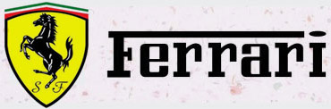

站点首页
HOME
关于我们
ABOUT
车型展示
DISPLAY
新闻中心
NEWS
常见问题
FAQ
联系我们
CONTACT
Ferrari
跑车。法拉利是世界闻名的赛车和运动跑车的生产厂家， 早期的法拉利赞助赛车手及生产赛车，1947年独立生产汽车。
品牌故事
STORY
法拉利（Ferrari）是一家意大利汽车生产商，1929年由恩佐·法拉利创办，主要制造 一级方程式赛车、赛车及高性能跑车。法拉利是世界闻名的赛车和运动跑车的生产厂家， 早期的法拉利赞助赛车手及生产赛车，1947年独立生产汽车。菲亚特（FIAT）拥有法拉利 90%的股权，但法拉利却能独立于菲亚特运营。法拉利汽车大部分采用手工制造，产量很低， 截至2011年法拉利共交付7195台新车，为法拉利史上最佳销售业绩。公司总部在意大利的 马拉内罗（Maranello)……
发展历程
HISTORY
法拉利（Ferrari）是一家意大利汽车生产商，1929年由恩佐·法拉利创办，主要制造 一级方程式赛车、赛车及高性能跑车。法拉利是世界闻名的赛车和运动跑车的生产厂家， 早期的法拉利赞助赛车手及生产赛车，1947年独立生产汽车。菲亚特（FIAT）拥有法拉利 90%的股权，但法拉利却能独立于菲亚特运营。法拉利汽车大部分采用手工制造，产量很低， 截至2011年法拉利共交付7195台新车，为法拉利史上最佳销售业绩。公司总部在意大利的 马拉内罗（Maranello)……
Ferrari
跑车。法拉利是世界闻名的赛车和运动跑车的生产厂家， 早期的法拉利赞助赛车手及生产赛车，1947年独立生产汽车。
Ferrari
跑车。法拉利是世界闻名的赛车和运动跑车的生产厂家， 早期的法拉利赞助赛车手及生产赛车，1947年独立生产汽车。
法拉利车队
FERRARI
法拉利（Ferrari）是一家意大利汽车生产商，1929年由恩佐·法拉利创办，主要制造 一级方程式赛车、赛车及高性能跑车。法拉利是世界闻名的赛车和运动跑车的生产厂家， 早期的法拉利赞助赛车手及生产赛车，1947年独立生产汽车。菲亚特（FIAT）拥有法拉利 90%的股权，但法拉利却能独立于菲亚特运营。法拉利汽车大部分采用手工制造，产量很低， 截至2011年法拉利共交付7195台新车，为法拉利史上最佳销售业绩。公司总部在意大利的 马拉内罗（Maranello)……